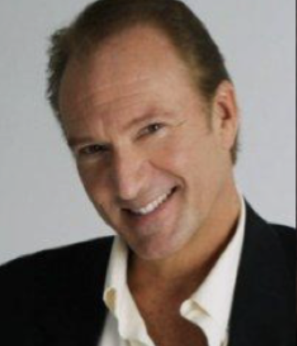

About
Meet Garrett!

Hello everyone! Thanks so much for visiting my website and for taking the time to learn more about who I am and how I got to where I am today. I started my studies at Webster University, double-majoring in Vocal Production and Theatre with a minor in Psychology… No better way for me to save myself the "couch fees", and figure out why in the world I went into show biz in the first place!
Well, many years later and after having covered the globe singing and acting in shows… I'm still at it and loving every moment!
My career began as a singer/actor in summer stock at the MUNY Opera in St. Louis, where I grew up (St. Louisans: don't forget to ask me where I went to high school!). While still studying vocal production in college, I was privileged to be the youngest baritone to solo with the St. Louis Symphony.
Early in my career I was invited by the Italian Ambassador to sing at the National Symphonic Ball at the Kennedy Center in Washington D.C., where the Ambassador was being honored.
I continued my studies at the MET Studios in NYC with John Reardon. Over the years, I've taken Master Classes with opera greats Pavarotti, Sutherland, Horne, Milnes and others.
While studying in NYC, I auditioned for and got a part in a show named Unsinkable Molly Brown. I certainly needed the work and it was only a summer tour: hopefully it wouldn't take me away from my studies for long. Covering the lead was pretty exciting for a young actor… especially when the lead was Howard Keel!
The musical theatre “bug” had bitten and I didn't return to continue my operatic studies, although I still love to attend the opera when possible.
I went on to do extensive concert work around the world. I've sung in concert many times in Vienna, Austria and I was invited by the Italian Cultural Department to sing at the Puccini Festival in Torre del Lago, Italy.
Additional national and international theatre credits include such roles as:
- Phil in Milk and Honey
- Adam in Seven Brides for Seven Brothers
- Don Quixote in Man Of La Mancha
- Hajj in Kismet
- King Arthur in Camelot
- Emile in South Pacific
- Pirate King in Pirates of Penzance
- Phantom in a European tour of Phantom of the Opera
- And many others! Head over to the gallery to hear some of my work.
In the Far East, as part of the “100 Day Celebration” of the hand-over of Hong Kong, I played opposite Marie Osmond, as Captain Von Trapp in The Sound of Music. I've also been honored to perform for the Royal Family of Thailand.
Although I currently reside in Missouri, I try to see family and friends in Europe as often as possible. You'll find me spending a great deal of my time teaching voice and acting out of Concerts International LLC Vocal and Acting Studios in St. Louis, Missouri.
- Garrett Liam States